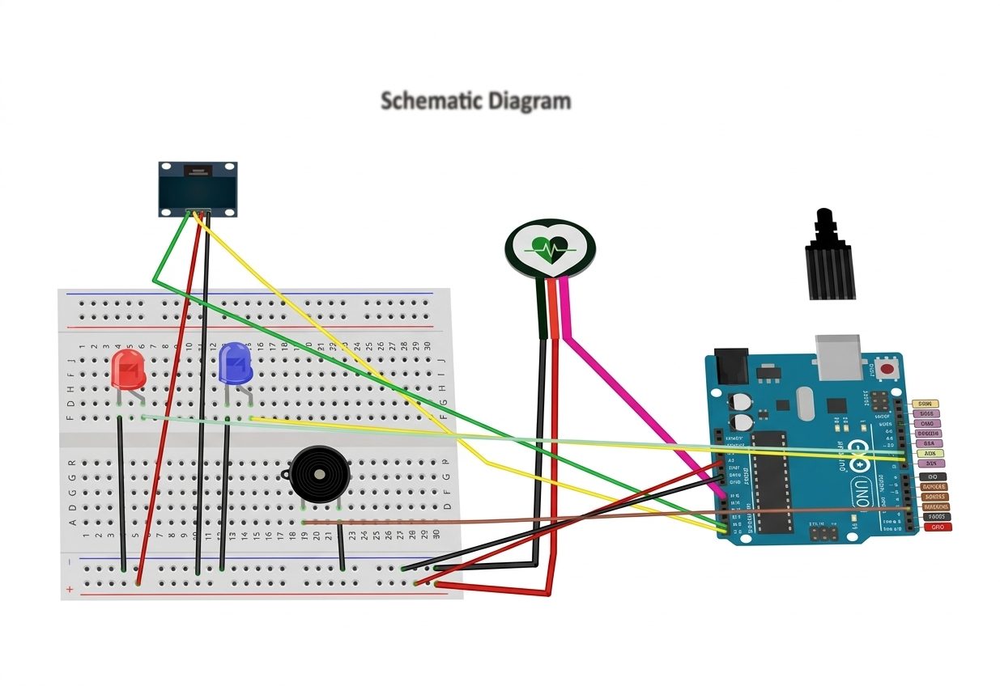
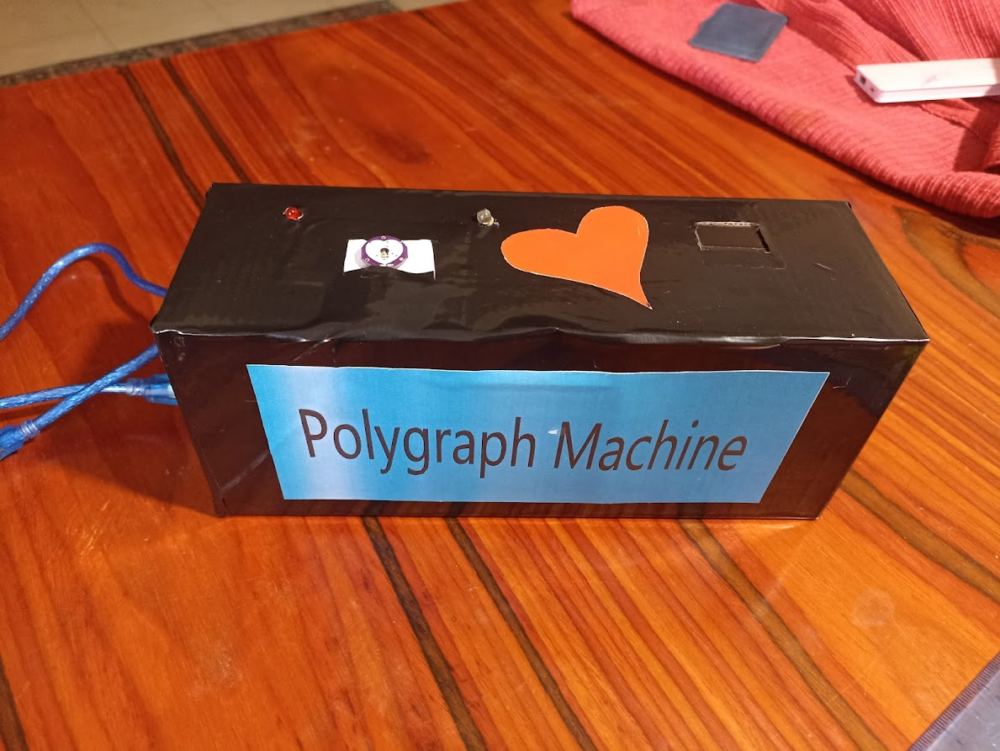

Description: A polygraph machine built as a smart circuit that monitors heartbeat fluctuations. It activates visual and auditory indicators when changes occur.
The OLED display shows real-time BPM (Beats per Minute), and based on the values:
Usage: The user places a finger on the pulse sensor. The readings are processed, and feedback is provided visually and audibly depending on the BPM.
Click the image to switch between external and internal views:
